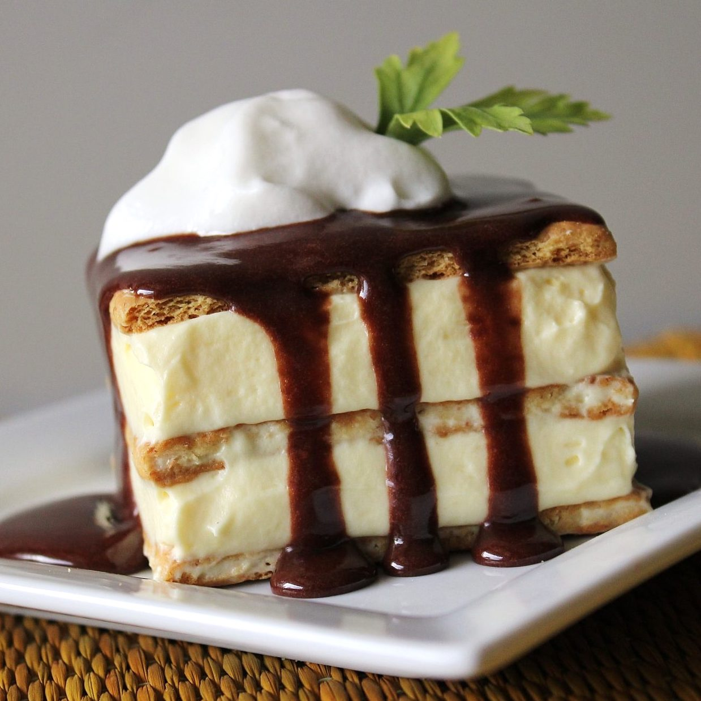

Odin Dessert

Description
Enjoy a tasty dessert, made with love and sweet stuff by Odin himself!
Ingredients
- 2 individual packages graham crackers
- 2 (3 ounce) packages instant vanilla pudding mix
- 3 cups milk
- 1 (8 ounce) container frozen whipped topping, thawed
- 1 (16 ounce) package prepared chocolate frosting
Steps
- Line the bottom of a 9x13-inch pan with graham crackers.
- In a large bowl, combine pudding mix and milk; stir well. Mix whipped topping into pudding mixture. Spread half of mixture over graham cracker layer. Top with another layer of graham crackers and the remaining pudding.
- Top all with a final layer of graham crackers and frost with chocolate frosting. Refrigerate at least two hours before serving to allow the graham crackers to soften.
Back to homepage